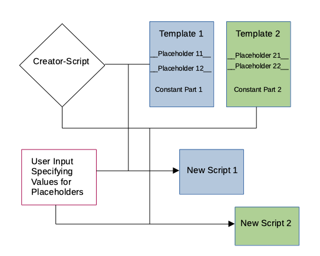

vignettes/qbashtools_getting_started.Rmd
qbashtools_getting_started.RmdThe following statements can be used to create new bash scripts based on templates
nbsaro.sh -o new_saro_script.shnbsasc.sh -o new_sasc_script.shnbutsc.sh -o new_utsc_script.shThe creator-scripts first ask the user to enter values to replace placeholders in the templates.
Most data evaluations at Qualitas AG are using bash scripts to drive the flow of the individual evaluation steps. As a consequence of that the creation of new bash scripts is a frequently returning task. Creating bash scripts from scratch is a tedious task. Many of the bash scripts contain the same elements with only minor modifications. The use of templates which contain all the elements which are identical between the different scripts. The parts that vary between the individual scripts are entered by a creator script. The basic functionality of this process is shown below.

The current process of creating new scripts supports three types of different scripts.
The bash scripts that are used in the routine genetic evaluation are scripts that are self-contained. That means all functions used in these scripts are defined in the script itself. So this type of script in its initial form does not have any external dependencies. This type of script can only run in a directory that is called ‘prog’.
New bash scripts are created with a creator-script which is called ‘new_bash_script.sh’. The user of the creator-script determines which type of bash script is created by passing the template file that belongs to the type of bash script to be created.
For each script type (SARO, SASC and UTSC) there is a template file which contains all the elements which are constant across all scripts of the same type. The variable elements in the templates are represented by placeholders. The creator-script reads the template specific for each script type and searches for any placeholder in the template. For each of the placeholders in the template, the user is asked to enter a value with which the placeholder is replaced.
The creation of a new bash script is simplified with three wrapper-scripts. The wrapper scripts are installed in the ‘linuxBin’ directory which is in the path for the user ‘zws’ on the server of FB-ZWS.